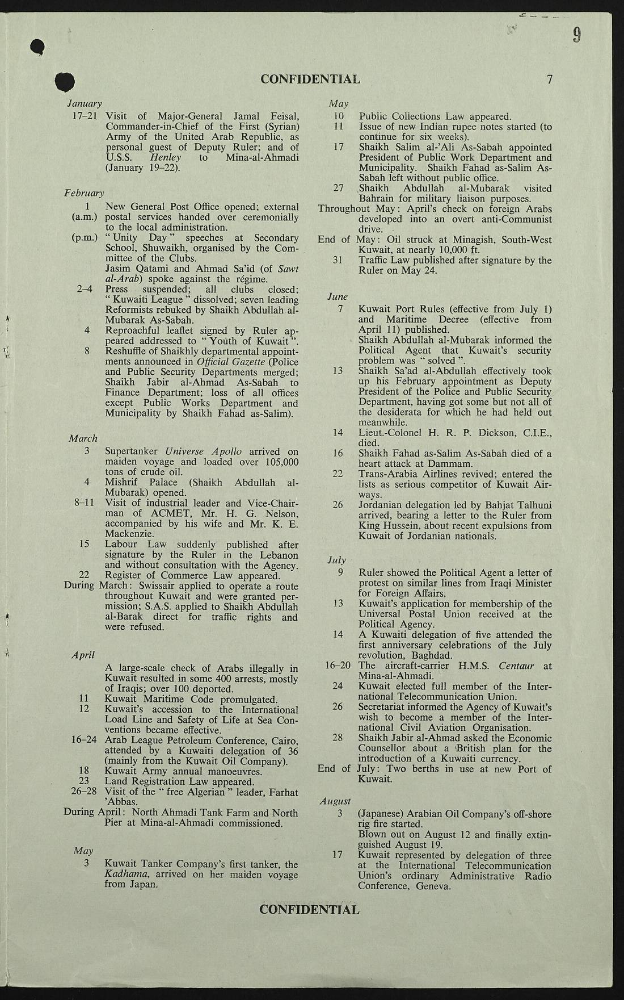
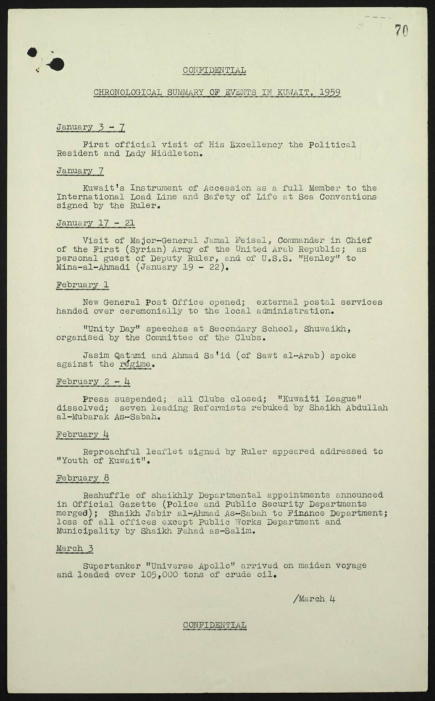
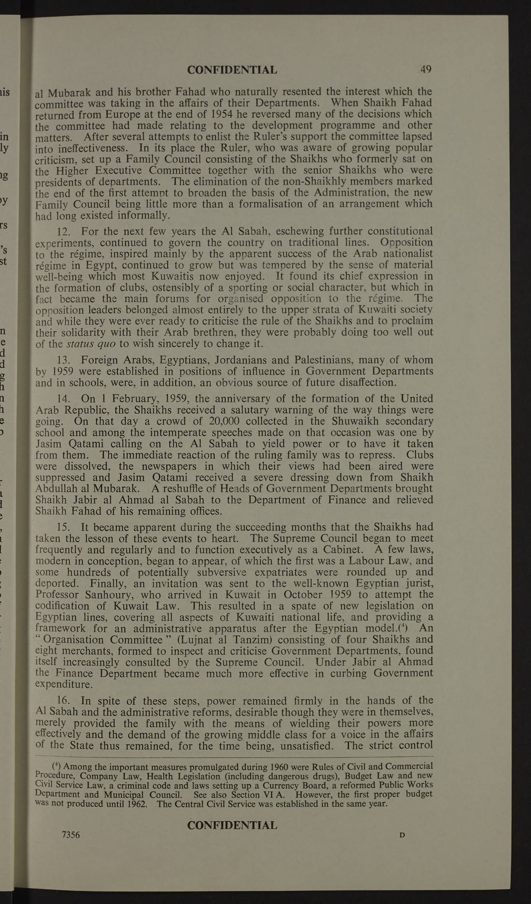
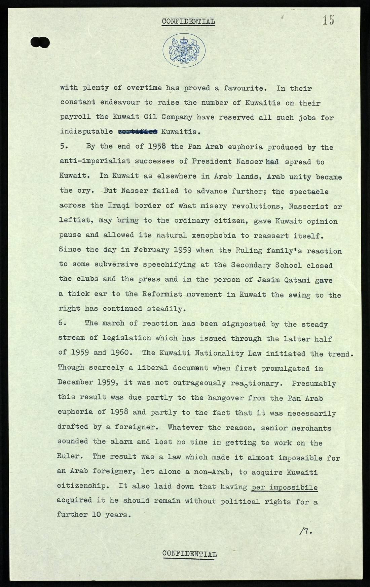

١ فبراير ١٩٥٩ · المراجعة البريطانية السنوية لعام ١٩٥٩، والملخص التاريخي الرسمي للخليج ١٩٥٣ إلى ١٩٦٤ (ثلاث نسخ مطبوعة)، وتقرير عام ١٩٦٠
خطاب يوم الوحدة في ثانوية الشويخ
ما هي
في ذكرى قيام الجمهورية العربية المتحدة اجتمع نحو ٢٠ ألف شخص في ثانوية الشويخ، وألقى جاسم القطامي خطابا دعا فيه آل الصباح إلى التخلي عن السلطة. فأُغلقت الأندية وعُطلت الصحف ووبّخ الشيخ عبدالله المبارك جاسم.
أهميتها
الرواية البريطانية لمنعطف في طريق الكويت إلى دستورها، وجاسم في قلبه. ويرد في خمسة ملفات منفصلة.
من المقصود
هو جاسم القطامي نفسه الوارد اسمه الكامل في وثائق أخرى: مدير الشرطة الذي استقال وقت أزمة السويس، ثم النائب القومي في مجلس الأمة.
صور الصفحات







النص الأصلي
أسماء أخرى
المصادر
الأرشيف الوطني البريطاني في لندن، رقمنه الأرشيف الرقمي للخليج العربي (agda.ae). الصور منشورة بإذن من الأرشيف الوطني البريطاني.
مرجع الأرشيف
- FO 371/148896 · Persian Gulf: annual reviews for 1959
- FO 464/49 · Arabia: historical summary of events in the Persian Gulf Sheikhdoms and the Sultanate of Muscat and Oman, together with a collection of oil agreements and connected documents, 1953-1964
- FO 464/50 · Arabia: historical summary of events in the Persian Gulf Sheikhdoms and the Sultanate of Muscat and Oman, 1953-1964; volume 1, chapters 1-6
- FO 464/51 · Arabia: historical summary of events in the Persian Gulf Sheikhdoms and the Sultanate of Muscat and Oman, 1953-1964; volume 1, chapters 1-6
- FO 371/148911 · Internal Political Situation: Kuwait
كيف كُتب هذا النص: نُسخ من قراءة الأرشيف لنص الصورة، وصُحح بالمقارنة مع الصورة حيث كانت القراءة مشوهة. وتشير … إلى نص محذوف. الترجمة العربية من Claude، يرجى مراجعتها.
افتح في الموقع التفاعلي